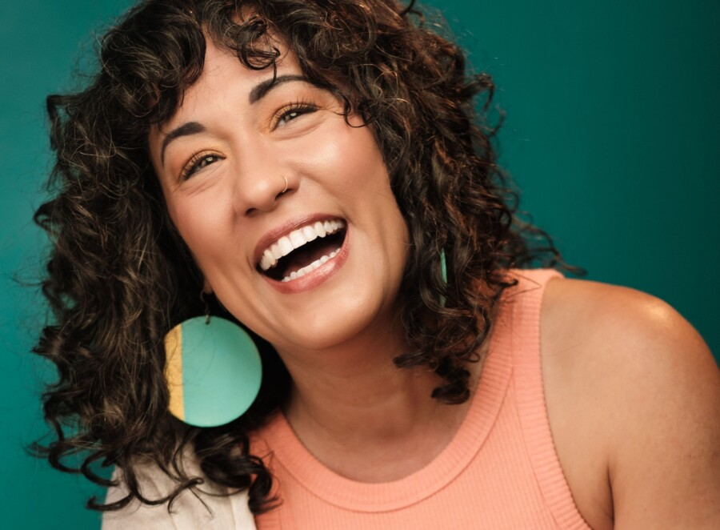

Chicago Poet Laureate Mayda del Valle with Poetry Editor-in-Chief Adrian Matejka
Wine Reception 6:00 pm | Program 6:30 pm | Book Signing to follow
At the beginning of 2026 Mayor Johnson, with DCASE, the Chicago Public Library, and the Poetry Foundation, announced Mayda Alexandra del Valle as Chicago’s Second Poet Laureate. A poet, performer, educator and interdisciplinary artist born and raised on the South Side of Chicago, Del Valle brings a multidisciplinary practice rooted in poetry, performance, music, movement and cultural history. She sits down with Poetry editor-in-chief and fellow author Adrian Matejka to discuss her practice and history and present a reading or two.